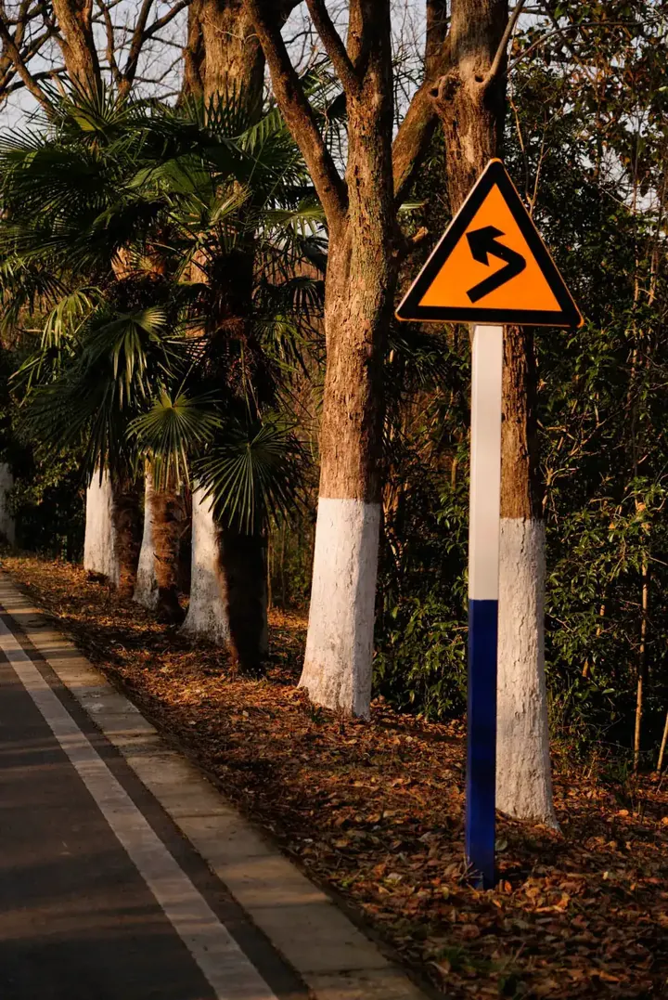
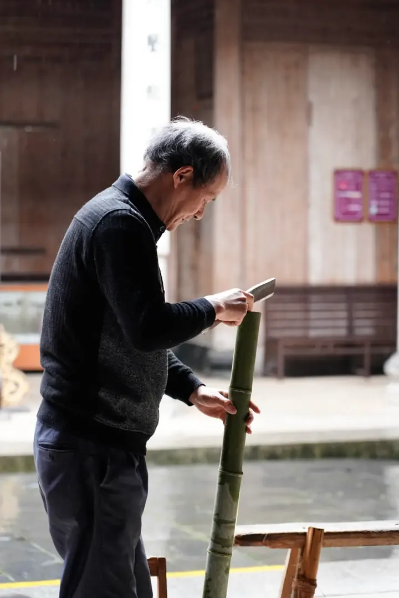
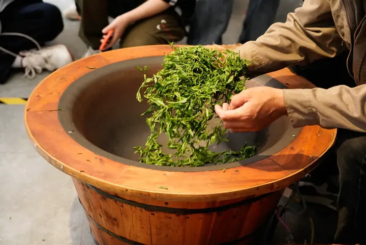
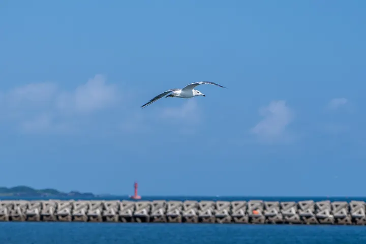
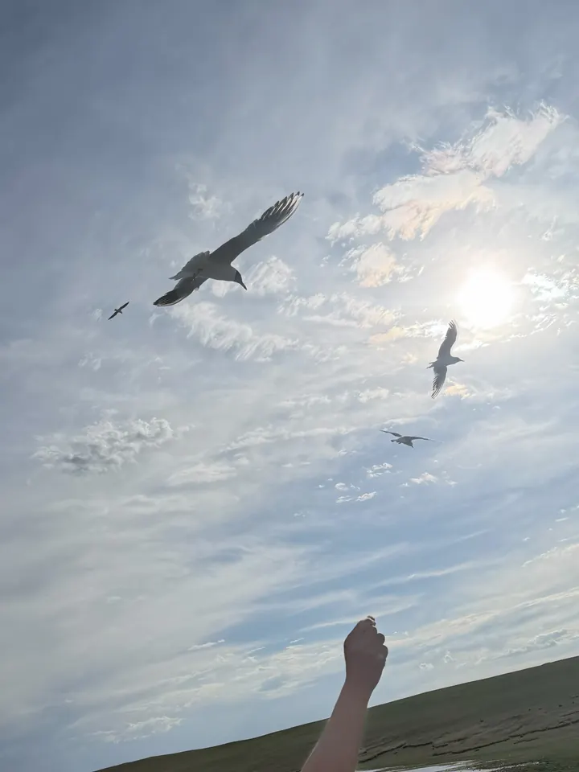

Gallery
4 rolls · 18 frames · 2023 – 2026A Winter's Light
Hefei · December 2023 · 4 frames The story →
70mmf/41/800 sISO 100 01 ▸Trees and Roadmark
38mmf/41/2000 sISO 250
02 ▸Maple Leaves
105mmf/41/1000 sISO 100
03 ▸Leaves over Stairs
04 ▸Abstract Leaves
Hongcun
Anhui · April 2024 · 8 frames
105mmf/41/125 sISO 2500 05 ▸Splitting Bamboo
105mmf/41/125 sISO 2500
06 ▸Bamboo Strips in the Rain
105mmf/41/125 sISO 3200
07 ▸Painting with a Brush
44mmf/41/1250 sISO 200
08 ▸Holding Tea

68mmf/41/400 sISO 4000 09 ▸Baking Tea
10 ▸Fireworks
67mmf/41/640 sISO 160
11 ▸Hongcun Village
105mmf/41/2500 sISO 200
12 ▸Stone in the River
Along the Water
2023 – 2024 · 4 frames
75mmf/2.81/25 sISO 320
13 ▸Lamp by the Riverside
75mmf/221/160 sISO 640
14 ▸Ancient Town and River Panorama
105mmf/41/250 sISO 100
15 ▸Suzhou's Sunset

105mmf/41/1250 sISO 100 16 ▸Seagull in the SkyA New Chapter
Vancouver · September 2026 · 2 frames
24mm eq.f/1.81/12000 sISO 80
17 ▸Sunset Over the River

18 ▸Reaching for Seagulls